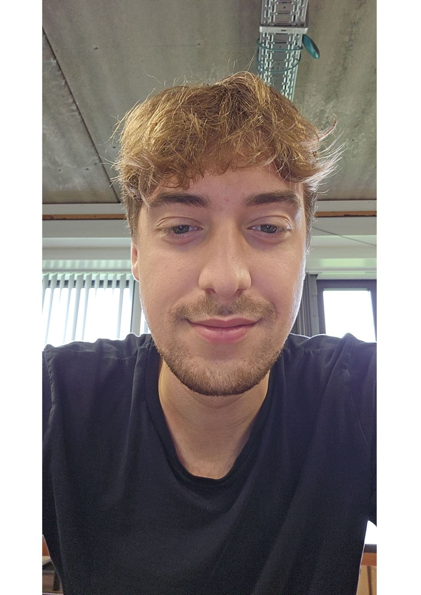

About Me

Hi, I'm Mihai
I am Mihai Constantin, a 20-year-old Applied Computer Science student from Mol, Belgium. I enjoy turning ideas into practical digital products that people can really use.
My current growth path is clear: first learning strong analysis and design foundations, then building complete web solutions, and now applying AI in practical contexts. Long-term, the focus is to specialize further in Artificial Intelligence.
What motivates me most is the process itself: understanding a problem, building a clean solution, and improving it through feedback.
Key Development Areas
Education
Bachelor of Applied Computer Science
Thomas More Geel | 2024 – Present
In this program, I work on software engineering and project-based learning. The practical assignments help me improve technical depth and teamwork while building a strong base for future AI studies.
Secondary Education
Campus Sint-Jan Berghmans | 2022 – 2024
Computer Sciences specialization, with a strong focus on programming and IT fundamentals.
Secondary Education - Sciences
Campus Sint-Jan Berghmans | 2018 – 2022
General sciences track where I built a solid analytical base in mathematics and science.
Why Applied Computer Science?
I chose Applied Computer Science because I like solving real problems with software. I enjoy understanding how systems work under the hood, then translating that into user-friendly applications.
Over time, I discovered that I enjoy both practical product building and the analytical side of computing, which is why I want to continue toward Artificial Intelligence.
Outside of School
Fitness
Fitness strengthens discipline and consistency, which directly helps with structured project execution and long-term goals.
Football
Joining a pub football team develops teamwork, communication under pressure, and adaptability in fast decision-making moments.
Friends
Spending time with friends reinforces communication and empathy, both essential for productive and respectful group work.
Learning
Continuous learning builds curiosity and growth mindset, helping each semester improve both technical depth and project quality.
My Goals
Short Term
- Finish my degree with good results
- Deliver strong results in Skills Integration Lab projects
- Build a portfolio that clearly shows personal growth and contribution
- Gain experience with data and AI-oriented work
Long Term
Continue my studies with an Artificial Intelligence focus and contribute to meaningful AI-driven software that solves real problems.
Next: Projects
The projects page shows how these motivations translate into concrete outputs, from analysis artifacts to fully working platform features.
Continue to ProjectsCV and Skills
My CV is available on a dedicated page and can also be downloaded as PDF.
Open CV Page Download CV (PDF)
My technical and soft skills are also presented in HTML format on the Skills page.
Let's Connect
dragosmihaiconstantin@gmail.com
+32 468 23 53 83
github.com/MihCons
Mol, Belgium